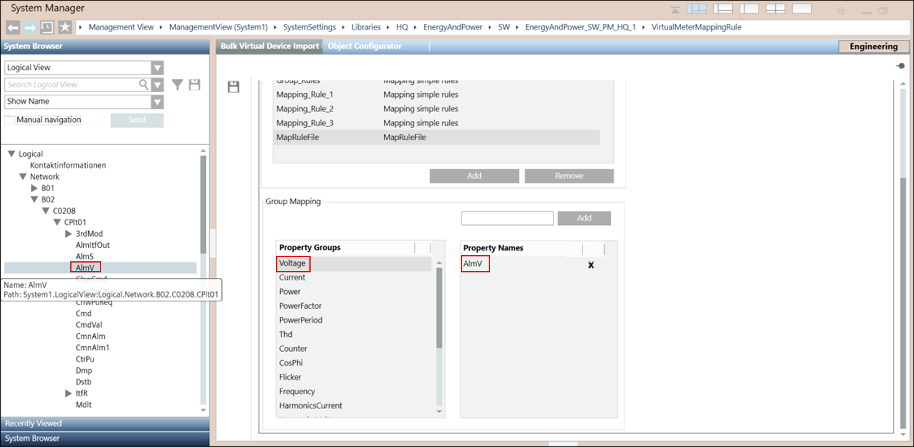
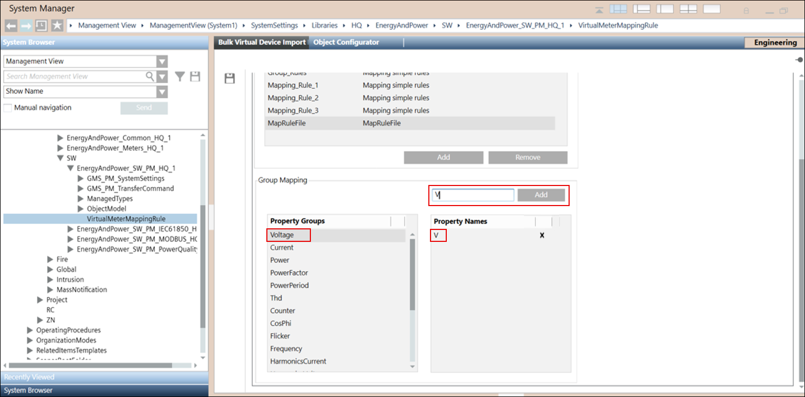

Defining Virtual Devices Bulk Import Rules
- System Manager is in Engineering mode.
- System Browser is in Management View.
- In the System Browser, navigate to SystemSettings > Libraries> HQ > EnergyAndPower > SW > EnergyAndPower_SW_PM_HQ_1 > VirtualDeviceMappingRule.
- Select Virtual Devices Bulk Import Rules in the Primary pane.
- Select Property Name Based Mapping or Unit Based Mapping to create a property name based or unit based mapping rule.
- In Property Name Based Mapping Rules, click Add to create a new mapping rule file.
- Add Rule dialog box appears.
- Enter the Rule File Name and rule Description. - Do the following to create a property name based mapping rule. To create a unit based mapping rule, go to Step 6.
- Navigate to the respective view (Management, Logical, or User define) with the hierarchy of the System Browser nodes.
- In the Group Mapping section, select the Property Group using the scrollbar.
- To map the System Browser node with the selected Property Group, drag-and-drop the node on the selected property group. The node name is displayed in the Property Names section.
For example, using scrollbar you have selected the Property Group as Voltage and you want to map the System Browser node AlmV with Voltage, drag-and-drop the node AlmV on the Voltage property group.
In the Property Names section, node AlmV displays. - Click Save
 .
. - For property name based mapping rule, the System Browser node is successfully mapped with the property group.

- Do the following to create a unit based mapping rule.
- Navigate to the respective view (Management, Logical, or User define) with the hierarchy of the System Browser nodes.
- In the Group Mapping section, using scrollbar select the Property Group with which you want to map a unit.
- In the text field, enter the unit and click Add.
- Click Save .
- The unit is mapped with the selected property group.

- The property name based or unit based mapping file is created and is listed in the Property mapping rule section of the Hierarchical Data Mapping and Delimeter Separated Data Mapping expanders on selecting the Name based or Unit based options.